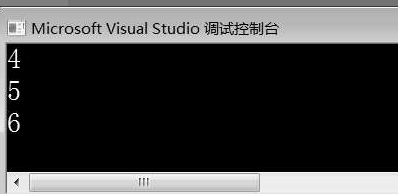
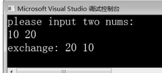
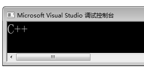

1 C++ 基础语法 —— C++对 C 语言的补充
1 #include<iostream>
2 using namespace std;
3 int main()
4 {
5 cout<<"hello C++"<<endl;
6 return 0;
7 }
所示的C++程序，文件扩展名是“.cpp”。第1行代码作用是包含标准输入/输出头文件iostream。第2行代码作用是引用标准命名空间std。第5行代码在屏幕输出“hello C++”。cout是预定义的输出流对象，用于输出数据；endl表示换行。由图1-1可知，程序成功在屏幕上输出了“hello C++”。
1 命名空间
命名空间语言的新特性，它能够解决命名冲突问题。
1.1 标准命名空间
std 是 C++ 的标准命名空间，由于C++的标准库几乎都定义在std命名空间中，因此编写的所有C++程序都需要引入如此语句：using namespace std;
1.2 自定义命名空间
使用 namespace 可以自定义命名空间，示例代码如下：
namespace lib
{
void func(){}
}
上述代码中，使用 namespace 定义了一个名称为 lib 的命名空间，该命名空间内部定义了一个 func（） 函数。
如果要使用命名空间中定义的元素，有下列三种方式。
（1）使用“命名空间::元素”方式制定命名空间中定义的元素。
例如，如果要在屏幕上输出数据，并且在末尾加上换行，就要使用标准命名空间std的cout和endl，在使用cout和endl前面加上命名空间和“::”作用域标识符，示例代码如下所示：
std::cout<<"C++"<<std::endl;
（2）使用using语句引用命名空间元素。例如，如果在屏幕上输出数据，可以使用using引用标准命名空间中的cout，这样在后面的代码中可以随意使用cout，示例代码如下所示：
using std::cout;
cout<<"C++";
需要注意的是，这种方式只能使用using引入的元素，例如，无法单独使用endl这个元素，但可以通过std::endl的形式使用endl。（3）使用using语句直接引用命名空间。示例代码如下所示：
using namespace std;
这样引入std空间后，std中定义的所有元素就都可以被使用了。但这种情况下，如果引用多个命名空间往往容易出错。例如，自定义swap()函数，标准库也有swap()函数，调用swap()函数就会出现二义性错误。针对这个问题，可以使用“命名空间：：元素”方式指定具体要引用的元素。
1.3 匿名命名空间
匿名命名空间：命名空间还可以定义成匿名的，即创建命名空间时不写名字，由系统自动分配。例如，下面定义的命名空间就是匿名的。
namespcae{
... //可以是变量、函数、类、其他命名控件
}
匿名命名空间：命名空间还可以定义成匿名的，即创建命名空间时不写名字，由系统自动分配。例如，下面定义的命名空间就是匿名的。
namespace _UNIQUE_NAME_
{
… //可以是变量、函数、类、其他命名空间
}
using namespace _UNIQUE_NAME_;
2 类型增强
C语言和C++语言都属于强类型语言，相比于C语言，C++中的类型检查更加严格，下面介绍C++对常见类型的增强。
2.1 常变量类型 const
使用const修饰的变量称为常变量，C语言中的常变量可以通过指针修改，而C++中的常变量无法通过指针间接修改。示例代码如下所示：
const int a = 10;
int* p = &a; // 类型不兼容错误
*p = 20; //无法通过指针修改常变量
2.2 逻辑类型 bool
C语言中没有逻辑类型，只能用非0表示真，用0表示假。C++增加了bool类型，使用true表示真，false表示假。示例代码如下所示：
bool a = false; //定义bool类型变量
bool b = true;
bool greater(int x, int y){return x > y;} // 比较x是否大于y
2.3 枚举类型 enum
C语言中枚举类型只能是整数类型，且枚举变量可以用任意整数赋值，使用自由灵活。在C++中，枚举变量只能使用枚举常量进行赋值。下面代码在C++中是不被允许的。
enum temperature {WARM,COOL,HOT};
enum temperature t= WARM;
t=10; //错误
3 默认参数
“默认”的概念大家都不陌生，比如安装一款软件时，在安装过程中会有默认参数选项，如默认安装路径，安装时可以修改默认安装路径。C++的函数支持默认参数，即在声明或者定义函数时指定参数的默认值。下面通过案例演示默认参数的用法，如例所示。
1 #include<iostream>
2 using namespace std;
3 void add(int x,int y=1,int z=2)
4 {
5 cout<<x+y+z<<endl;
6 }
7 int main()
8 {
9 add(1); //只传递1给形参x，y、z使用默认形参值
10 add(1,2); //传递1给x，2给y，z使用默认形参值
11 add(1,2,3); //传递三个参数，不使用默认形参值
12 return 0;
13 }

在例中，第3～6行代码定义了函数 add()，该函数指定了参数y、z的默认值。
第9～11行代码在 main() 中调用了三次 add() 函数。第一次调用 add() 函数时，只传入一个参数1，形参y、z使用默认参数；
第二次调用时，传入参数1、2，形参z使用默认参数；
第三次调用时，传入参数1、2、3，不使用默认参数。由运行结果可知，三次 add() 函数均调用成功，都输出了运算结果。
使用默认参数时，需要注意以下规则。
（1）默认参数只可在函数声明中出现一次，如果没有函数声明，只有函数定义，那么可以在函数定义中设定。
（2）默认参数赋值的顺序是自右向左，即如果一个参数设定了默认参数，则其右边不能存在未赋值的形参。
（3）默认参数调用时，遵循参数调用顺序，即有参数传入时它会先从左向右依次匹配。
（4）默认参数值可以是全局变量、全局常量，甚至可以是一个函数。
4 函数重载
在平时生活中经常会出现这样一种情况，一个班里可能同时有两个甚至多个叫小明的同学，但是他们的身高、体重、外貌等有所不同，老师点名时都会根据他们的特征来区分。
在编程语言里也存在这种情况，参数不同的函数有着相同的名字，调用时根据参数不同确定调用哪个函数，这就是C++的函数重载机制。
所谓函数重载（overload），就是在同一个作用域内函数名相同但参数个数或者参数类型不同的函数。
例如，在同一个作用域内同时定义三个add()函数，这三个add()函数就是重载函数，示例代码如下所示：
void add(int x, int y);
void add(float x);
double add(double x, double y);
下面通过案例演示函数重载的用法：
1 #include <iostream>
2 using namespace std;
3 void add(int x, int y)
4 {
5 cout << "int: " << x + y << endl;
6 }
7 void add(double x)
8 {
9 cout << "double: " << 10 + x << endl;
10 }
11 double add(double x, double y)
12 {
13 return x + y;
14 }
15 int main()
16 {
17 add(10.2); //一个double类型参数
18 add(1, 3); //两个int类型参数
19 return 0;
20 }

第3～14行代码定义了三个重载函数add()。
第17行代码调用add()函数，传入一个double类型的实参10.2。第18行代码调用add()函数，传入两个int类型的实参1和3。由图1-4可知，两次调用add()函数都成功计算出了结果。
调用重载函数时，编译器会根据传入的实参与重载函数逐一匹配，根据匹配结果决定到底调用哪个函数。
如果重载函数中的形参没有默认参数，定义和调用一般不会出现问题，但是当重载函数有默认参数时，需要注意调用二义性。
例如，下面的两个add()函数：
int add(int x, int y = 1);
void add(int x);
当调用 add() 函数时，如果只传入一个参数就会产生歧义，编译器无法确认调用哪一个函数，这就产生了调用的二义性。在编写程序时，要杜绝重载的函数有默认参数，从而避免调用二义性的发生。
5 引用
引用时C++引入的新语言特性，他是某一个变量的别名，使用“&”符号标识，引用的定义格式如下：
数据类型& 引用名 = 变量名；
习惯使用C语言开发的人看到“&”符号就会想到取地址，但是在 C++ 引用中，“&”只是起到标识的作用。
案例演示引用的用法，
1 #include<iostream>
2 using namespace std;
3 int main()
4 {
5 int a=10;
6 int& ra=a;
7 cout<<"变量a的地址"<<hex<<&a<<endl;
8 cout<<"引用ra的地址:"<<hex<<&ra<<endl;
9 cout<<"引用ra的值:"<<dec<<ra<<endl;
10 return 0;
11 }

在例1-5中，第5行代码定义了整型变量a并初始化为10。
第6行代码定义了指向变量a的引用ra。
第7～9行代码分别输出变量a的地址、引用ra的地址、引用ra的值。
由运行结果可知，引用ra的地址和变量a的地址相同；引用ra的值为10，与变量a的值相同。
在定义引用时，有以下几点需要注意。
（1）引用在定义时必须初始化，且与变量类型保持一致。
（2）引用在初始化时不能绑定常量值，如int&b=10是错误的。
（3）引用在初始化后，其值不能再更改，即不能用作其他变量的引用。
在C++中，引用的一个重要作用是作为函数参数。下面通过案例演示引用作为函数参数的用法，如例下面的例子所示。
1 #include<iostream>
2 using namespace std;
3 void exchange(int& x, int& y)
4 {
5 int temp = x;
6 x = y;
7 y = temp;
8 }
9 int main()
10 {
11 int a, b;
12 cout << "please input two nums: " << endl;
13 cin >> a >> b;
14 exchange(a, b);
15 cout << " exchange: " << a << " "<< b << endl;
16 return 0;
17 }
第3～8行代码定义了一个函数 exchange()，用于交换两个 int 类型变量的值。exchange() 函数有两个 int 类型的引用作为参数。第 13～15 行代码通过 cin 从键盘输入两个整型数据给变量 a、b，调用 exchange() 函数交换变量 a、b 的值，并输出交换结果。运行结果如下，变量a、b的值交换成功。

exchange() 函数的形参如果为普通变量（值传递），由于副本机制无法实现变量a、b的交换。
如果形参为指针（址传递），可以完成变量a、b的交换，但需要为形参（指针）分配存储单元，在调用时要反复使用“*指针名”获取数据，且实参传递时要取地址（&a、&b），这样很容易出现错误，且程序的可读性也会下降。
而使用引用作为形参，就克服了值传递和址传递的缺点，通过引用可以直接操作变量，简单高效，可读性又好。
引用是隐式的指针，但引用却不等同于指针，使用引用与使用指针有着本质的区别。
（1）指针指向一个变量，需要占据额外的内存单元，而引用指向一个变量，不占据额外内存单元。
（2）作为函数参数时，指针的实参是变量的地址，而引用的实参是变量本身，但系统向引用传递的是变量的地址而不是变量的值。
显然，引用比指针更简单直观方便。使用引用可以代替指针的部分操作。在C语言中只能用指针来处理的问题，在C++中可以通过引用完成，从而降低了程序设计的难度。
如果想使用常量值初始化引用，则引用必须用 const 修饰，用 const 修饰的引用称为 const 引用，也称为常引用。const 引用可以用 const 对象和常量值进行初始化。
const 引用可以用 const 对象和常量值进行初始化。示例代码如下所示：
const int &a = 10;
const int b = 10;
const int &rb = b;
上述代码中，第1行代码定义了const引用a，使用常量10进行初始化；第2行代码定义常变量b，第3行代码定义了const引用rb，使用常变量b进行初始化。
常变量的引用必须是const引用，但const引用不是必须使用常量或常变量进行初始化，const引用可以使用普通变量进行初始化，只是使用普通变量初始化const引用时，不允许通过该引用修改变量的值。示例代码如下所示：
int a = 10; //变量a
const int &b = a; //使用a初始化const引用b
b=20; //错误
当引用作函数参数时，也可以使用const修饰，表示不能在函数内部修改参数的值。例如下面的函数，比较两个字符串长度：
bool isLonger(const string &s1, const string &s2)
{
return s1.size() > s2.size();
}
在 isLonger() 函数中，只能比较两个字符串长度而不能改变字符串内容。
6 字符串类
C语言不存在字符串类型，都是用字符数组处理字符串，C++支持C风格的字符串，另外还提供了一种字符串数据类型：string。string是定义在头文件string中的类，使用前需要包含头文件string。使用string定义字符串比较简单，主要有以下几种方式：
string s1;
s1="hello C++"; //第一种方式
string s2="hello C++"; //第二种方式
string s3("hello C++"); //第三种方式
string s4(6,'a'); //第四种方式
第一种方式先定义了字符串变量s1，再为字符串变量s1赋值；
第二种方式直接使用“=”为字符串变量s2赋值；
第三种方式在定义字符串变量时，将初始值放在“()”运算符中，使用“()”运算符中的字符串为变量初始化；
第四种方式在定义字符串变量时，也将初始值放在“()”运算符中，但是“()”中有两个参数，第一个参数表示字符个数，第二个参数表示构成字符串的字符。上述代码最后一行，表示用6个字符'a'构成的字符串初始化变量s4，初始化后s4的值为"aaaaaa"。
:::color3 使用string定义字符串时，不需要担心字符串长度、内存不足等情况，而且string类重载的运算符与成员函数足以完成字符串的各种处理操作。
:::
6.1 访问字符串中的字符
string 类重载了“[]”运算符，可以通过索引方式访问和操作字符串中指定位置的字符。示例代码如下所示：
string s="hello,C++";
s[7]='P';
s[8]='P';
上述代码中，通过索引将字符串s中的两个“+”都修改成了'P'。
6.2 字符串的连接
在 C 语言中，连接两个字符串要调用 strcat() 函数，还要考虑内存溢出情况。在C++中，string 重载了“+”运算符，可以使用“+”运算符连接两个 string 类型的字符串，示例代码如下所示：
string s1,s2;
s1="我在学习";
s2="C++";
cout<<s1+s2<<endl; //我在学习C++
6.3 字符串的比较
在 C 语言中，比较两个字符串是否相等需要调用 strcmp() 函数，而在 C++ 中，可以直接调用重载的“>”“<”“==”等运算符比较两个 string 字符串。示例代码如下所示：
string s1,s2;
cin>>s1>>s2;
//比较两个字符串内容是否相同
if(s1>s2)
cout<<"字符串s1大于s2"<<endl;
else if (s1<s2)
cout<<"字符串s2大于s1"<<endl;
else
cout<<"字符串s1与s2相等"<<endl;
上述代码通过“>”“<”“==”运算符比较用户输入的两个字符串的内容是否相同。
6.4 字符串的长度计算
string类提供的length()函数用于获取字符串长度。length()函数类似于C语言中的strlen()函数。调用length()函数获取字符串长度的示例代码如下所示：
string s="hello C++";
cout<<"length():"<<s.length()<<endl;
需要注意的是，由于计算结果不包括字符串末尾结束标志符“\0”，因此，上述代码使用length()函数计算出字符串s的长度为9。
6.5 字符串交换
string类提供了成员函数swap()，用于交换两个字符串的值，示例代码如下所示：
string s1="hello C++";
string s2="I Love China!";
s1.swap(s2); //通过“.”运算符方式交换
swap(s1,s2); //通过函数调用方式交换
需要注意的是，string 的成员函数 swap() 只能交换 string 类型的字符串，不能交换C语言风格的字符串。
7 new/delete
C++ 增加了 new 运算符分配堆内存，delete 运算符释放堆内存。具体用法如下。
7.1 使用 new 运算符分配堆内存
new 运算符用于申请一块连续的内存，格式如下：
new 数据类型（初始化列表）；
上述格式中，数据类型表示申请的内存空间要存储数据的类型；
初始化列表指的是要存储的数据。如果暂时不存储数据，初始化列表可以为空，或者数据类型后面没有(）。
如果内存申请成功，则 new 返回一个具体类型的指针；如果内存申请失败，则 new 返回 NULL。new 申请内存空间的过程，通常称为 new 一个对象。
与 malloc() 相比，new 创建动态对象时不必为对象命名，直接指定数据类型即可，并且 new 能够根据初始化列表中的值进行初始化。下面介绍 new 运算符常见的几种用法。
（1）创建基本数据类型对象。使用 new 创建基本数据类型对象，示例代码如下所示：
char* pc = new char; //存储char类型的数据
int* pi = new int(10); //存储int类型的数据
double* pd = new double(); //存储double类型的数据
上述代码分别用 new 创建了 char、int、double 三个对象。其中，char 对象没有初始化列表，新分配内存中没有初始值；int 对象初始化列表为10，即分配一块内存空间，并把10存入该空间；double 对象初始化列表为空，编译器会用 0 初始化该对象。
（2）创建数组类型对象。使用 new 创建数组对象，格式如下所示：
new 数据类型[数组长度]；
使用 new 创建数组的示例代码如下所示：
char* pc = new char[10];
在上述代码中，指针 pc 指向大小为 10 的 char 类型数组。
7.2 使用 delete 运算符释放堆内存
用new运算符分配的内存在使用后要及时释放以免造成内存泄漏，C++提供了delete运算符释放new出来的内存空间，格式：delete 指针名；
由上述格式可知，delete 运算符直接作用于指针就可以释放指针所指向的内存空间。但是使用delete运算符释放数组对象时要在指针名前加上[]，格式：delete []指针名；
如果漏掉了[]，编译器在编译时无法发现错误，导致内存泄漏。下面通过案例来掩饰 new 和 delete 的用法，如：
1 #include<iostream>
2 using namespace std
3 int main()
4 {
5 int* pi = new int(10); //创建一个int对象，初始值为10
6 cout<<"*pi="<<*pi<<endl;
7 *pi = 20; //通过指针改变内存中的值
8 cout<<"*pi = "<<*pi<<endl;
9 //创建一个大小为10的char类型的数组
10 char* pc = new char[10];
11 for(int i = 0;i < 10;i++)
12 pc[i] = i + 65; //向数组中存入元素
13 for(int i = 0;i < 10;i++)
14 cout<<pc[i]<<" ";
15 cout<<endl;
16 delete pi; //释放int对象
17 delete []pc; //释放char数组对象
18 return 0;
19 }
第5行代码使用new创建了一个int对象，初始值为10。
第6行代码通过指针pi输出内存中的数据，由运行结果可知，输出结果为10。
第7～8行代码通过指针pi修改内存中的数据为20，并输出，由运行结果可知，输出结果为20。
第10～12行代码使用new创建一个大小为10的char类型数组，并通过for循环为数组赋值。
第13～14行代码通过for循环输出数组中的元素，由运行结果可知，数组中的元素成功输出。
第16～17行代码使用delete运算符释放int对象和char类型数组对象。

8 extern"C"
在C++程序中，可以使用extern"C"标注C语言代码，编译器会将extern"C"标注的代码以C语言的方式编译。使用extern"C"标注C语言代码的格式具体如下：
extern"C"
{
// C语言代码
}
下面通过案例演示在C++程序中编译C语言程序，这个案例包括mallocStr.h、mallocStr.c和m ain.cpp三个文件，三个文件的实现分别如例：
#include<stdio.h>
#include<stdlib.h>
char* func(int,char*
#define _CRT_SECURE_NO_WARNINGS
#include"mallocStr.h"
char* func(int size,char *str)
{
char* p =malloc(size);
strcpy(p,str);
return p;
}
#include<iostream>
using namespace std;
#ifdef __cplusplus
extern"C"
{
#endif
#include"mallocStr.h"
#ifdef __cplusplus
}
#endif
int main()
{
char str[]="C++";
char *p=func(sizeof(str)+1,str);
cout<<p<<endl;
free (p);
return 0;
}

mallocStr.h 文件和 mallocStr.c 文件所示代码是C语言程序。其中，mallocStr.c 文件中定义了 func() 函数，在函数内部调用 malloc() 函数申请一块内存空间存储一个字符串。func() 函数第一个参数指定申请内存的大小，第二个参数是存入内存空间的字符串。在 main.cpp 中，程序调用了 func() 函数，则需要使用 extern"C" 声明mallocStr.h 文件内容以 C 语言的方式编译。
9 强制类型转换
与C语言的类型转换相比，C++的类型转换机制更加安全。C++提供了四个类型转换运算符应对不同类型数据之间的转换，下面分别进行介绍。
9.1 static_cast(expression)
static_cast<>是最常用的类型转换运算符，主要执行非多态的转换，用于代替C语言中通常的转换操作。static_cast<>可以实现下列转换。基本数据类型之间的转换。将任何类型转换为void类型。把空指针转换成目标类型的指针。用于类层次结构中基类和派生类之间指针或引用的转换。
向上转换（派生类转换为基类）是安全的；向下转换（基类转换为派生类）没有动态类型检查，是不安全的。
使用 static_cast<> 运算符进行类型转换的示例代码如下所示：
int a=1;
float b=3.14;
a=static_cast<int>(b); //将float类型转换为int类型
b=static_cast<float>(a); //将int类型转换为float类型
int *q=NULL;
void* p = NULL;
q=p; //将空指针转换为int类型，C语言允许，C++不允许
p=q;
q=static_cast<int*>(p); //将空指针转换为int类型指针
9.2 reinterpret_cast(expression)
reinterpret_cast 通常为操作数的位模式提供较低层的重新解释。例如，如果将一个 int 类型的数据 a 转换为double 类型的数据 b，仅仅是将 a 的比特位复制给 b，不作数据转换，也不进行类型检查。
reinterpret_cast 要转换的类型必须是指针类型、引用或算术类型。
使用 reinterpret_cast<> 运算符进行类型转换的示例代码具体如下：
char c = 'a';
int d = reinterpret_cast<int&>(c);
int *p=NULL;
float *q=NULL;
p = q; //C 语言允许，C++语言不允许
q = p; //C 语言允许，C++语言不允许
p = static_cast<int*>(q); //static_cast无法转换
q = static_cast<int*>(p); //static_cast无法转换
p = reinterpret_cast<int*>(q);
q = reinterpret_cast<float*>(p)
9.3 const_cast(expression)
const_cast<>用于移除const对象的引用或指针具有的常量性质，可以去除const对引用和指针的限定。示例代码如下所示：
int num = 100;
const int* p1 = #
//将常量指针转换为普通类型指针,去除const属性
int* p2 = const_cast<int*>(p1);
*p2 = 200;
int a=100;
const int & ra=a;
//将常量引用转换为普通类型引用，去除const属性
const_cast<int&>(ra)=200;
需要注意的是，const_cast<> 只能用于转换指针或引用。
9.4 dynamic_cast(expression)
dynam ic_cast<>用于运行时检查类型转换是否安全，可以在程序运行期间确定数据类型，如类的指针、类的引用和void*。dynam ic_cast<>主要应用于类层次间的向上转换和向下转换，以及类之间的交叉转换。
在类层次间进行向上转换时，它和static_cast作用一致。
不过，与static_cast相比，dynam ic_cast能够在运行时检查类型转换是否安全。
当向下转换时，如果基类指针或引用指向派生类对象，dynam ic_cast运算符会返回转换后类型的指针，这样的转换是安全的。
如果基类指针或引用没有指向派生类对象，则转换是不安全的，转换失败时就返回NULL。
总结
- C++中几乎不需要用宏。
- 用const或enum定义显式的常量。
- 用inline避免函数调用的额外开销。
- 用模板定义函数或类型。
- 用namespace避免命名冲突。
- 变量在使用时声明并初始化，不要提前声明变量。
- 使用new和delete会比函数malloc()和free()更好，realloc()函数可以用vector()代替。
- 避免使用void*、指针算术、联合和强制转换。
- 尽量少用数组和C风格的字符串，标准库中的string和vector可以简化程序。
- 试着将程序考虑为一组由类和对象表示的相互作用的概念。
更新: 2023-08-06 08:39:37
原文: https://www.yuque.com/xiaoshan_wgo/codingnotes/wz142xwrkhbrvgyw